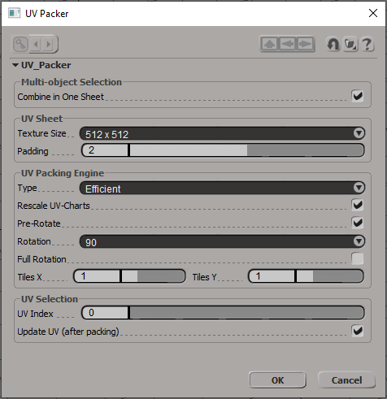

UV Packer for Softimage
Last update: 08.03.2021
Description: this is connector between Softimage and standalone UV Packer application for Blender
Download: UV Packer for Softimage addon v.0.9
How to install: install as usual addon for Softimage.
How it works: this addon works in the same way as addon for Blender. It contains from two parts. The main part is standalone application UV-Packer-Blender.exe This application can be freely downloaded from the official site. The second part of the addon is connector between Softimage and this standalone application. This connector gets a data from objects inside Softimage, pass this data into application, wait the answer and then apply changes to objects inside Softimage.
How to use: select any number of polygon mesh objects and call the command Get - Property - Texture Projection - UV Packer.
In most cases parameters in the window are the same, as in Blender addon. So the official documentation will be helpful.
- Combine in One Sheet: if turn ON, then uv-coordinates of all selected meshes will be placed inside one uv-sheet. If turn OFF, then uvs of each mesh will be packed independently.
- Texture Size: relative size of the uv-sheet. Make sense only for Padding parameter.
- Padding: the size in pixels (relative to Texture Size) between uv-islands.
- Type: the algorithm for packing. Efficient mode is faster.
- Rescale UV-Charts: allows to scale uv-islands to match proportions to it actual polygon sizes.
- Pre-Rotate, Rotation and Full Rotation: these settings allow to rotate individual uv-islands to pack it more efficient.
- Tiles X and Tiles Y: the size of the uv-sheet in X and Y directions. For example, size 3 means that uv-coordinates changes from 0.0 to 3.0.
- UV Index: the index of the uv property of the selected mesh, which will be packed.
- Update UV: if turn ON, then selected uv property will be updated with new uv-coordinates. If turn OFF, then after packing the new Texture Property with new coordinates will be created.
Remarks: current version of the addon uses the pure Python API for getting required data from objects in the scene. This process takes the most time. The actual packing is much faster. So, may be the process of data gathering will be rewritten into C++ in the future.